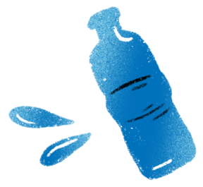

Bravo !
Mais attention à ne pas boire ou manger trop sucré.
Bravo !
Tu as composé un goûter hydratant
Mais attention à ne pas boire ou manger trop sucré.
Voici quelques recommandations :
• Le jus d'orange contient beaucoup de sucres. Avant 11 ans : pas plus d'1/2 verre par jour. Après 11 ans : pas plus d'1 verre par jour.
• Les sodas comme les colas contiennent beaucoup de sucres. Avant 11 ans : pas plus d'1/2 verre par jour. Après 11 ans : pas plus d'1 verre par jour.
• Les biscuits sont pratiques à transporter mais souvent riches en sucres, il ne faut pas en abuser.